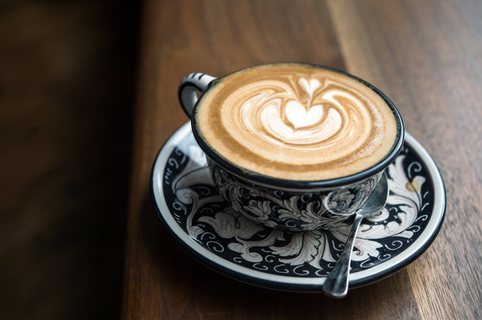

Coffee is a beverage brewed from the roasted and ground seeds of the
tropical evergreen coffee plant. Coffee is one of the three most popular
beverages in the world (alongside water and tea), and it is one of the
most profitable international commodities.
Turkish coffee is made of very finely ground coffee beans, and is also
different from other types of coffee in that it is brewed by boiling in
traditional copper pots called cezve.

A cappuccino is the perfect balance of espresso, steamed milk and foam.
This coffee is all about the structure and the even splitting of all
elements into equal thirds.
Irish coffee is a caffeinated alcoholic drink consisting of Irish
whiskey, hot coffee and sugar, which has been stirred and topped with
cream.